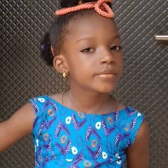

Physics Student & Aspiring Software Engineer
I am a Physics major transitioning my analytical mindset into the world of software development. I thrive on solving complex problems, building logical structures, and understanding how things work from first principles.
This portfolio tracks my progress in communication skills during this term.
I focused on developing my ability to present complex ideas clearly, adapt my writing for different audiences, and support arguments with credible evidence. The assignments included in this portfolio demonstrate my growth from basic writing to more sophisticated analysis.
Assignment Description: Analyze a modern advertising campaign and break down its psychological cues.
Title: Deconstructing Digital Deception in Fitness Marketing
This project examines how fitness brands use specific lighting techniques and color psychological triggers in social media ads to create artificial urgency. By analyzing three separate ad campaigns, this paper demonstrates that consumer trust is built on emotional manipulation rather than product metrics...
Reviewing these assignments side-by-side shows clear growth in my analytical skills. My early writing focused too much on opinions, while my later work relies on evidence and data structure. I still need to work on my time management during research phases, but I am confident using these skills in advanced courses next semester.
Pierce, E. (2025). Foundations of Modern Communication. Academic Press.
Solar Energy Industries Association. (2026). Quarterly Market Review. SEIA Reports.
Currently building my foundation in web development and computer science fundamentals:
Projects are currently under development! As I master HTML and CSS, I will showcase my responsive web layouts and coding experiments right here.